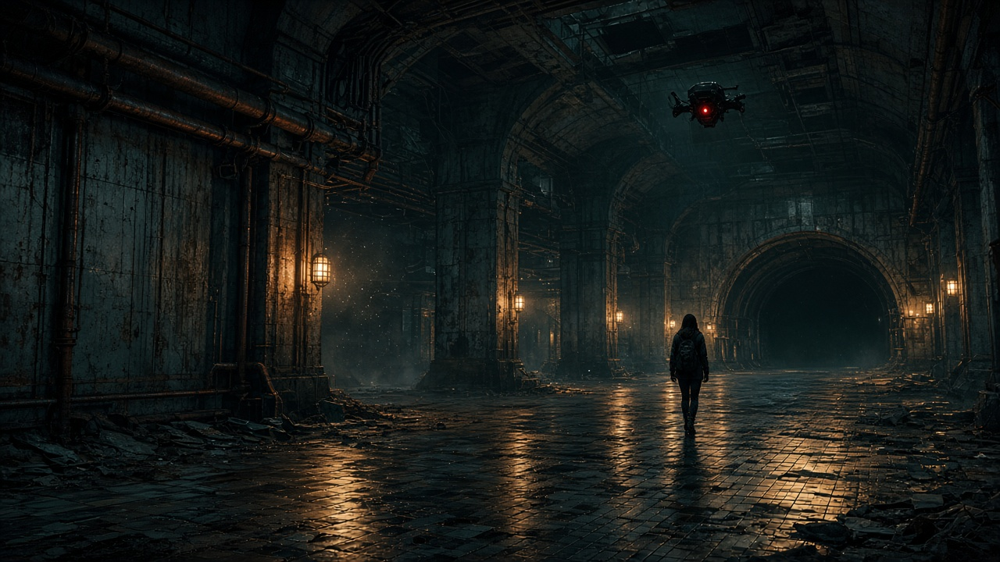
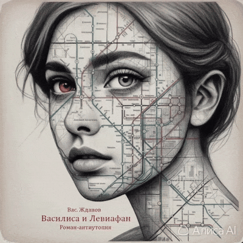

Часть первая
Москва под контролем T-00
Василиса спускается в метро. Брат Матвей пропал в «Синхро».

20 марта город падает. Наверху дроны и подменыши. Внизу метро: вагоны-жильё, свои законы, чужие станции. Василиса идёт к «Синхро» через общины, реки и тоннели.
—
сейчас читают
—
прочитали